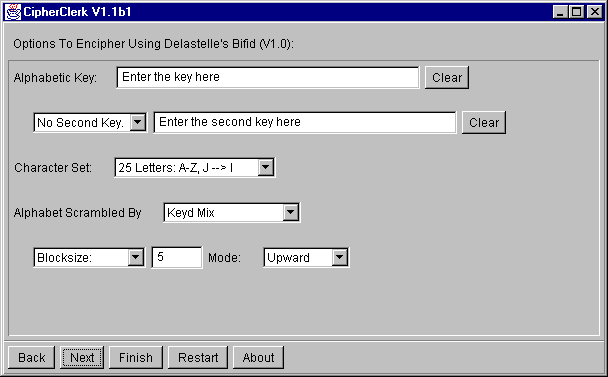
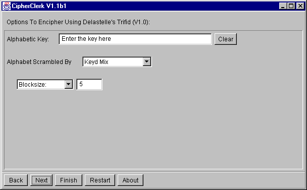

Delastelle's Fractional Substitution
Bifid Cipher
Description
At first, the text is encoded using a checkerboard
cipher. For example, using the key KEY we may obtain::
|
1 |
2 |
3 |
4 |
5 |
| 1 |
K |
E |
Y |
A |
B |
| 2 |
C |
D |
F |
G |
H |
| 3 |
I |
L |
M |
N |
O |
| 4 |
P |
Q |
R |
S |
T |
| 5 |
U |
V |
W |
X |
Z |
The text MESSAGE is represented by
| Text: |
M |
E |
S |
S |
A |
G |
E |
| Column: |
3 |
2 |
4 |
4 |
4 |
4 |
2 |
| Row: |
3 |
1 |
4 |
4 |
1 |
2 |
1 |
The column/row coordinates are now used to obtain letters again. The numbers
may be read in one of the following orders:
-
horizontal: 32 44 ... 41 31 to obtain the result FSSLP
AE
-
upwards: 32 14 ... 22 13 to obtain the result FPSSP
DI.
-
downwards: 31 24 ... 41 23 to obtain the result YQSAG
AL.
Instead of applying this procedure to the whole text, you may decide to
split the text into short blocks. Finally, you may use a second,
different key word for converting numbers back into letters.

Trifid Cipher
Description
This cipher is quite similar to the Bifid cipher described
above. It uses the same principle and differs only in the use of three
coordinates. To imagine, think of three checkerboards holding
3 x 3 letters. A letter is is then characterized by three numbers: one
for the table, one for the column and one for the row.

To proceed, you may